Containerization
Training
How We Teach
- We believe in learning by doing
- The training is lab driven
- Work together!
- Ask questions at any time
Session Logistics
- 2 days duration
- Mostly exercises
- Regular breaks
Assumed Knowledge and Requirements
- Familiarity with Bash or Powershell
- Bash Cheat Sheet: http://bit.ly/2mTQr8l
Your Lab Environment
- You have been given an instance for use in exercises
- Ask instructor for credentials if you don't have them already
Course Learning Objectives
By the end of this course, learners will be able to
- Assess the advantages of a containerized software development & deployment
- Use Docker engine features necessary for running containerized applications
Introducing Docker
What We Want
Ideal software should
- be modular and flexible (devs)
- be easy to migrate (devops)
- be easy to scale, monitor and lifecycle (ops)
- mitigate vulnerabilities (security)
- run cheap (business)
Without Containerization
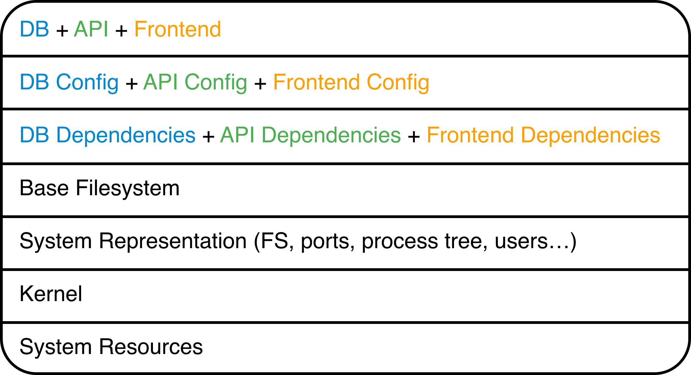With Containerization
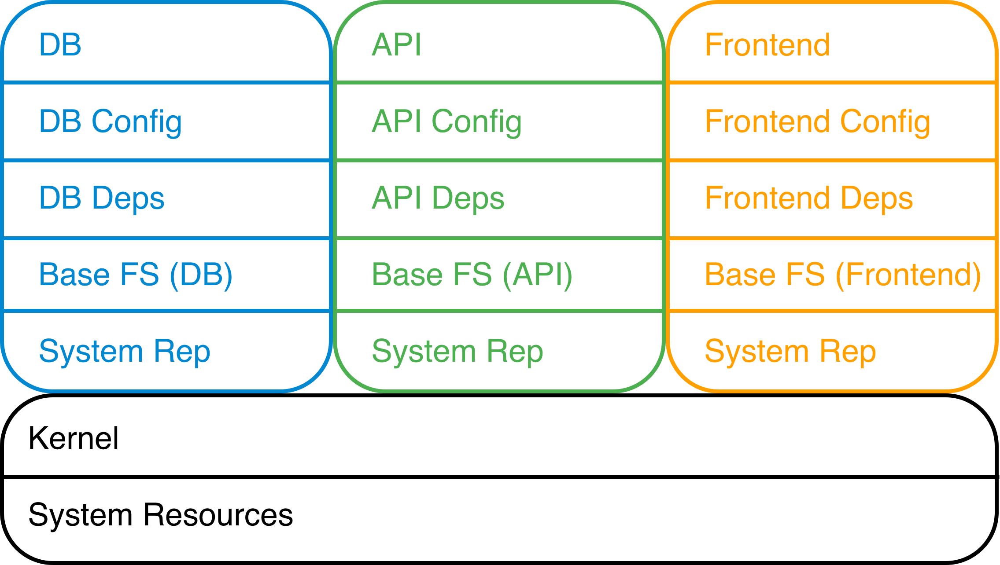Rapid Development
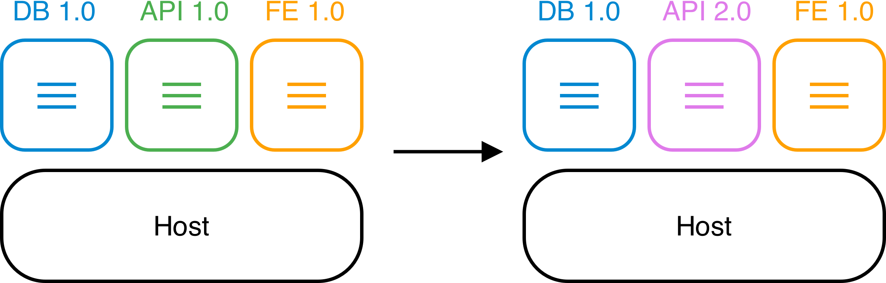Containers can be removed and replaced with a minimum of impact on their neighbors, increasing developer choice and speed.
Smooth Migration
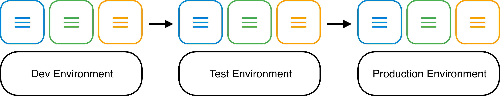Containers carry their environment and dependencies with them, simplifying and minimizing requirements on the hosts that run them.
Simple Scale & Maintenance
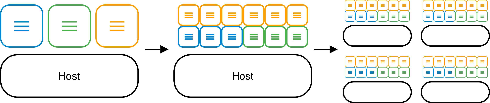Weak coupling between containers minimizes side effects when scaling and simplifies monitoring.
Secure by Default
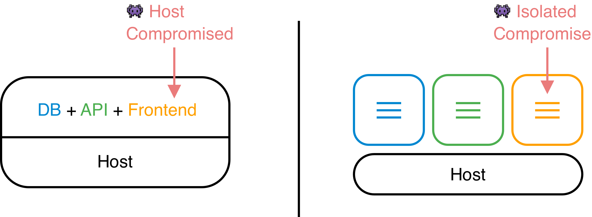Containers have private system resources, so a compromise in one does not affect the rest.
Application Density
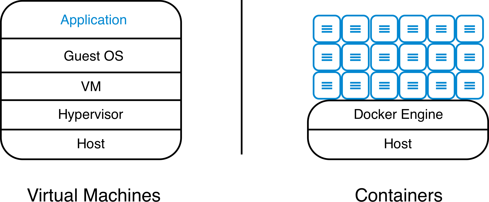Containers save datacenter costs by running many more application instances than virtual machines can on the same physical hosts.
Containerization Basics
Discussion: Running Containers
What assurances would you need to run a process on an arbitrary host? Consider
- Hostile environments
- Required resources
Learning Objectives
By the end of this module, learners will be able to
- Describe what a container is in terms of processes and isolation tools
- Use the key commands for interacting with Docker containers
Containers are Processes
Containers are processes sandboxed by
- Kernel namespaces
- Control Groups
- Root privilege management & syscall restrictions (Linux)
- VM isolation (Windows)
Linux Kernel Namespaces
- DEFAULT
- Process IDs
- Network stacks
- Inter-process communications
- Mount points
- Hostnames
- OPTIONAL
- User IDs
Linux PID Kernel Namespace
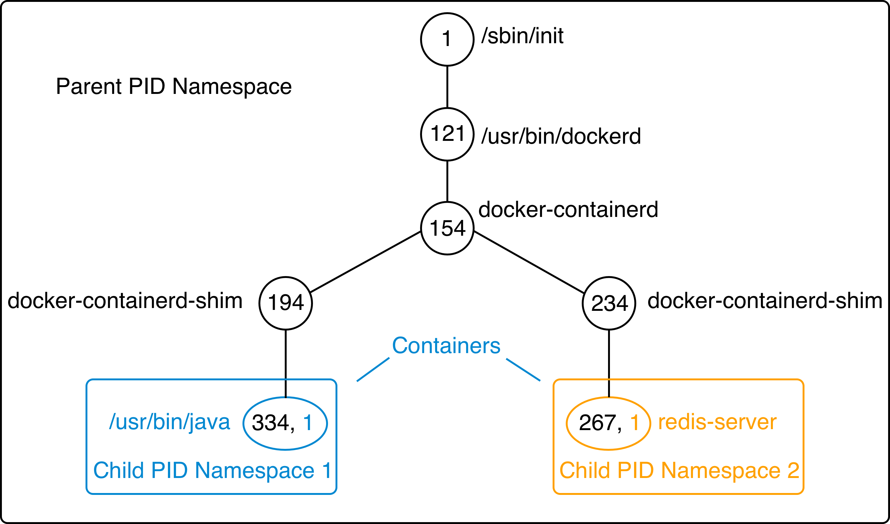Optional Linux Isolation Features
- Control groups: limit memory & CPU
- Root privilege management: whitelist root powers
- System call management: whitelist available system calls
- Linux Security Modules: mandatory filesystem access control
 Instructor Demo: Process Isolation
Instructor Demo: Process Isolation
See the demo
- Process Isolation
In the Exercises book.
Exercise: Container Basics
Work through
- Running and Inspecting a Container
- Interactive Containers
- Detached Containers and Logging
- Starting, Stopping, Inspecting and Deleting Containers
In the Exercises book.
Container Lifecycle
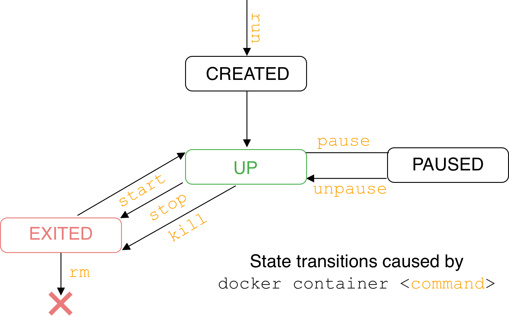Container Logs
- STDOUT and STDERR for a containerized process
docker container logs <container name>
Container Basics Takeaways
- Single process constrained by kernel namespaces, control groups and other technologies
- Private & ephemeral filesystem and data
Further Reading
- List of container commands: http://dockr.ly/2iLBV2I
- Getting started with containers: http://dockr.ly/2gmxKWB
- Start containers automatically: http://dockr.ly/2xB8sMl
- Limit a container's resources: http://dockr.ly/2wqN5Nn
- Keep containers alive during daemon downtime: http://dockr.ly/2emLwb5
- Isolate containers with a user namespace: http://dockr.ly/2gmyKdf
- Intro to Windows Containers: https://dockr.ly/2CTYhYb
Creating Images
Discussion: Provisioning Filesystems
What are some potential difficulties with provisioning entire filesystems for containers? How can we avoid these problems?
Learning Objectives
By the end of this module, learners will be able to
- Create images via several methods
- Describe the filesystem structure underlying an image
- Understand the performance implications of different image design decisions
- Correctly tag and namespace images for distribution on a registry
What are Images?
- A filesystem for container process
- Made of a stack of immutable layers
- Start with a base image
- New layer for each change
Sharing Layers
The Writable Container Layer
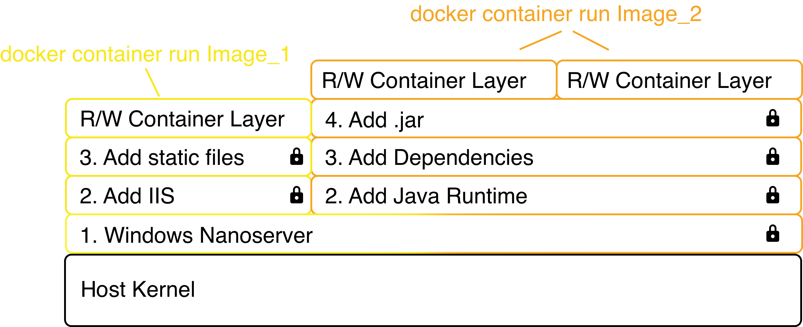Images: Copy on Write
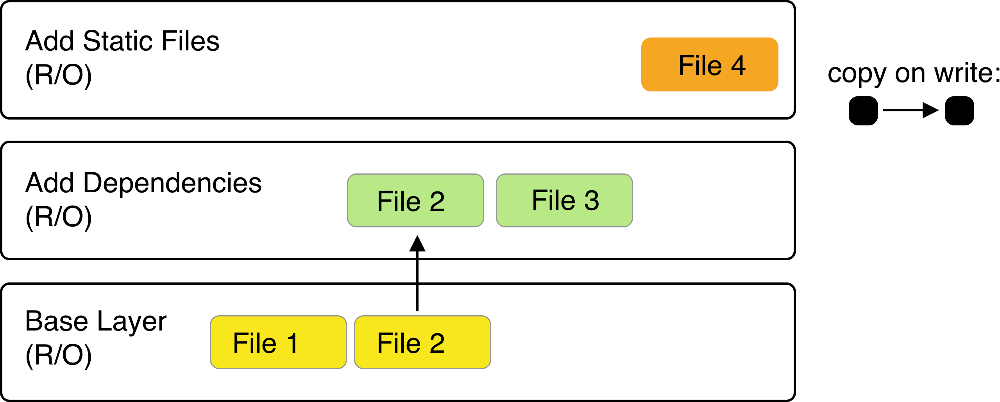Linux Containers: Union FS
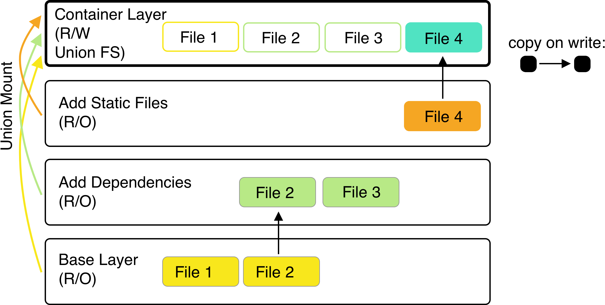Creating Images
Three methods:
- Commit the R/W container layer as a new R/O image layer.
- Define new layers to add to a starting image in a Dockerfile.
- Import a tarball into Docker as a standalone base layer.
Committing Container Changes
docker container commit
saves container layer as new R/O image layer- Pro: build images interactively
- Con: hard to reproduce or audit; avoid this in practice.
Dockerfiles
- Content manifest
- Provides image layer documentation
- Enables automation (CI/CD)
Dockerfiles
FROMcommand defines base image.- Each subsequent command adds a layer or metadata
docker image build ...builds image from Dockerfile
 Exercises: Creating Images
Exercises: Creating Images
Work through
- Interactive Image Creation
- Creating Images with Dockerfiles (1/2)
in the Exercises book.
Instructor Demo: Creating Images
See the demo
- Creating Images
In the Exercises book.
Build Cache
- After completion, the resulting image layer is labeled with a hash of the content of all current image layers in the stack.
CMD and ENTRYPOINT
- Recall all containers run a process as their PID 1
CMDandENTRYPOINTallow us to specify default processes.
CMD and ENTRYPOINT
CMDalone: default command and list of parameters.CMD+ENTRYPOINT:ENTRYPOINTprovides command,CMDprovides default parameters.CMDoverridden by command arguments todocker container runENTRYPOINToverridden via--entrypointflag todocker container run.
Shell vs. exec format
Exercise: Dockerfiles (2/2)
Work through
- Creating Images with Dockerfiles (2/2)
In the Exercises book.
COPY and ADD commands
COPY copies files from build context to image
COPY <src> <dest>
ADD can also untar* or fetch URLs.
In both cases
- create checksum for files added
- log checksum in build cache
- cache invalidated if checksum changed
Dockerfile Command Roundup
- FROM: base image to start from (usually OS)
- RUN: run a command in the environment defined so far
- CMD and ENTRYPOINT: define default behavior
- COPY and ADD: copy files into container
Many more Dockerfile commands are available; see the docs at https://docs.docker.com/engine/reference/builder/
Advanced Dockerfile Construction
How can we build images that are
- Lightweight
- Secure
- Minimal build times
The Scratch Image
- An "empty" image
- Can't be pulled
- Doesn't create a layer
- Used for building images not based on any pre-existing image
- Linux only
Multi-Stage Builds
$ docker image ls hwc REPOSITORY TAG IMAGE ID CREATED SIZE hwc latest 142c29686b6a 15 hours ago 184 MB
Multi-Stage Builds
Hello World, lightweight:
Build Targets
Dockerfile
FROM <base image> as base ... FROM <foo image> as foo ... FROM <bar image> as bar ... FROM alpine:3.4 ... COPY --from foo ... COPY --from bar ... ...
Building the image
docker image build --target <name> ...
Exercise: Multi-Stage Builds
Work through
- Multi-Stage Builds
In the Exercises book.
Image Construction Best Practices
- Start with official images
- Use multi-stage builds to drop compilers, SDKs...
- More layers leverage the cache...
- ...but fewer layers perform better.
Development: More Layers
Bad caching:
FROM python:3.5-alpine
RUN mkdir /app
COPY /mypy /app/
RUN pip install -r app/reqs.txt
...
Good caching:
FROM python:3.5-alpine RUN mkdir /app COPY /mypy/reqs.txt /app/ RUN pip install -r app/reqs.txt COPY /mypy /app/ ...
Production: Less Layers
-
To collapse ALL image layers:
docker container run -d --name demo mytallimage:1.0 docker container export demo > image.tar cat image.tar | docker image import - myflatimage:1.0
- Or build with
--squashflag (experimental): compress all non-base layers - Combine
container exportwith--squashfor one shareable base layer + one application-specific upper layer
Best Practice: Patching & Updates
Image Tags
- Optional string after image name, separated by
: :latestby default- Same image with two tags shares same ID, image layers:
$ docker image ls centos* REPOSITORY TAG IMAGE ID CREATED SIZE centos 7 8140d0c64310 7 days ago 193 MB $ docker image tag centos:7 centos:mytag $ docker image ls centos* REPOSITORY TAG IMAGE ID CREATED SIZE centos 7 8140d0c64310 7 days ago 193 MB centos mytag 8140d0c64310 7 days ago 193 MB
Image Namespaces
Images exist in one of three namespaces:
- Root (
ubuntu,nginx,mongo,mysql, ...) -
User / Org (
jdoe/myapp:1.1,microsoft/nanoserver:latest, ...) - Registry (
FQDN/jdoe/myapp:1.1, ...)
Image Tagging & Namespacing
- Tag on build:
docker image build -t myapp:1.0 . - Retag an existing image:
docker image tag myapp:1.0 me/myapp:2.0 - Note
docker image tagcan set both tag and namespace. - Names and tags are just pointers to image ID
- Image ID corresponds to immutable content addressable storage
Sharing Images
-
Docker Hub
- Provides certified commercial and free software distributed as Docker Images
- Shares community-generated images and content
Exercise: Managing Images
Work through
- Managing Images
In the Exercises book.
Image Creation Takeaways
- Images are built out of read-only layers.
- Dockerfiles specify image layer contents.
- Key Dockerfile commands:
FROM,RUN,COPYandENTRYPOINT - Images must be namespaced according to where you intend on sharing them.
Further Reading
- Best practices for writing Dockerfiles: http://dockr.ly/22WiJiO
- Use multi-stage builds: http://dockr.ly/2ewcUY3
- More about images, containers, and storage drivers: http://dockr.ly/1TuWndC
- Details on image layering: https://bit.ly/2AHX7iW
- Graphdriver plugins: http://dockr.ly/2eIVCab
- Docker Reference Architecture: An Intro to Storage Solutions for Docker CaaS: http://dockr.ly/2x8sBw2
- How to select a storage driver: http://dockr.ly/2eDu8yO
- Use the AUFS storage driver: http://dockr.ly/2jVc1Zz
- User guided caching in Docker: http://dockr.ly/2xKafPf
Docker Volumes
Discussion: Managing Data
If a container generates a lot of data, where should it be stored? What if you need to provision data to a container?
Learning Objectives
By the end of this module, learners will be able to
- Define a volume and identify its primary use cases
- Describe the advantages and potential security risks of mounting volumes and host directories into containers
Volume Usecases
Volumes provide a R/W path separate from the layered filesystem.
- Mount data at container startup
- Persist data when a container is deleted
- Share data between containers
- Speed up I/O by circumventing the union filesystem
Basic Volumes
- Named: managed by Docker; filesystem independent; user-specified identifier
- Anonymous: managed by Docker; filesystem independent; randomly-generated identifier
- Host mounted: mount a specific path on the host; DIY management
 Instructor Demo: Volumes
Instructor Demo: Volumes
See the demo
- Basic Volume Usage
In the Exercises book.
Volumes in dockerfiles
- VOLUME instruction creates a mount point
- Can specify arguments in a JSON array or string
- Cannot map volumes to host directories
- Volumes are initialized when the container is executed
Volumes and Security
- Point of ingress to the host and other containers
- Don't mount things unnecessarily
- Use the
:roflag - Linux: in-memory
tmpfsmounts available
Exercise: Volumes Usecase
Work through
- Database Volumes
In the Exercises book.
Docker Volume Takeaways
- Volumes persist data beyond the container lifecycle
- Volumes bypass the copy on write system (better for write-heavy containers)
Further Reading
- How to use volumes: http://dockr.ly/2vRZBDG
- Troubleshoot volume errors: http://dockr.ly/2vyjvbP
- Docker volume reference: http://dockr.ly/2ewrlew
Docker System Commands
Learning Objectives
By the end of this module, learners will be able to
- Execute clean-up commands
- Locate Docker system information
Clean-up Commands
-
docker system df
TYPE TOTAL ACTIVE SIZE RECLAIMABLE Images 39 2 9.01 GB 7.269 GB (80%) Containers 2 2 69.36 MB 0 B (0%) Local Volumes 0 0 0 B 0 B
docker system prune
more limited...
docker image prune [--filter "foo=bar"]docker container prune [--filter "foo=bar"]docker volume prune [--filter "foo=bar"]docker network prune [--filter "foo=bar"]

Inspect the System
docker system infoContainers: 2 Running: 2 Paused: 0 Stopped: 0 Images: 105 Server Version: 17.03.0-ee Storage Driver: overlay2 Backing Filesystem: extfs Supports d_type: true Native Overlay Diff: true Logging Driver: json-file Cgroup Driver: cgroupfs Plugins: Volume: local Network: bridge host ipvlan macvlan null overlay Swarm: active NodeID: ybmqksh6fm627armruq0e8id1 Is Manager: true ClusterID: 2rbf1dv6t5ntro2fxbry6ikr3 Managers: 1 Nodes: 1 Orchestration: Task History Retention Limit: 5 Raft: Snapshot Interval: 10000 Number of Old Snapshots to Retain: 0 Heartbeat Tick: 1 ...

System Events
Start observing with ...
docker system events
Generate events with ...
docker container run --rm alpine echo 'Hello World!'
2017-01-25T16:57:48.553596179-06:00 container create 30eb630790d44052f26c1081... 2017-01-25T16:57:48.556718161-06:00 container attach 30eb630790d44052f26c1081... 2017-01-25T16:57:48.698190608-06:00 network connect de1b2b40f522e69318847ada3... 2017-01-25T16:57:49.062631155-06:00 container start 30eb630790d44052f26c1081d... 2017-01-25T16:57:49.164526268-06:00 container die 30eb630790d44052f26c1081dbf... 2017-01-25T16:57:49.613422740-06:00 network disconnect de1b2b40f522e69318847a... 2017-01-25T16:57:49.815845051-06:00 container destroy 30eb630790d44052f26c108...
 Exercise: System Commands
Exercise: System Commands
Work through
- Cleaning up Docker Resources
- Inspection Commands
in the Exercises book.
Discussion
- What is the origin of dangling image layers?
- What are some potential pitfalls to automating system cleanup with prune commands, and how to avoid them?
- Questions?
Further Reading
- System commands reference: http://dockr.ly/2eMR53i
Containerization Fundamentals Conclusion: Any App, Anywhere.
- Containers are isolated processes
- Images provide filesystem for containers
- Volumes persist data
Wrap Up - Spring Boot
Exercise Instructions
- Goal: Build a docker image that runs a Java application
- Clone the git repository at https://github.com/ckaserer/java-helloworld
- Build the application using
gradle bootJarand find the resulting fat-jar file atbuild/libs(already done for you). - You can run the java application locally with
java –jar rest-service-0.0.1-SNAPSHOT.jar, this starts an application server on port 8080. Check it in your browser via http://127.0.0.1:8080/greeting (respectively with your AWS instance public dns).
Solution Hints
- Build the application outside of the container (already done and checked into git).
- Find a suitable docker base image, that has a JRE installation.
- Use both the
CMDand theENTRYPOINTinstructions. - Run two instances of the container – what do you have to take care of? Make sure both instances are reachable via browser.
Solution
Sample Dockerfile
Solution Commands
- docker build -t spring_boot_example .
- docker run –d –p 80:8080 spring_boot_example
Containerization Training
Please take our feedback survey
Get in touch: office@gepardec.com
Docker Networking Basics
Discussion: Portable Networks
Network traffic must by definition traverse a network outside its originating container. How can we make inter-container communication as portable and secure as containers themselves?
Learning Objectives
By the end of this module, learners will be able to
- Describe Docker's container network model and its security implications
- Describe the basic technologies that underwrite single host networks
- Understand how Docker manipulates a host's firewall rules to control container traffic
The Container Network Model

Linux: Default Single-Host Network
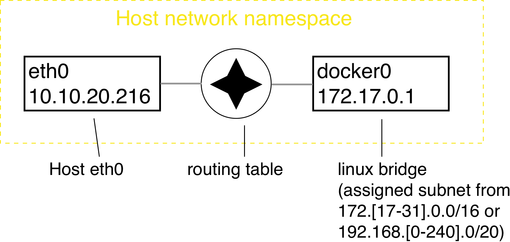Linux: Default Container Networking
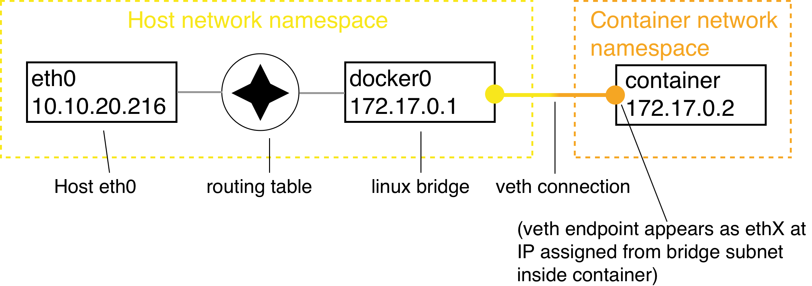Quiz: identify the sandbox, endpoint and network corresponding to the container networking model objects in this diagram.
Linux: User-Defined Bridges & Firewalls
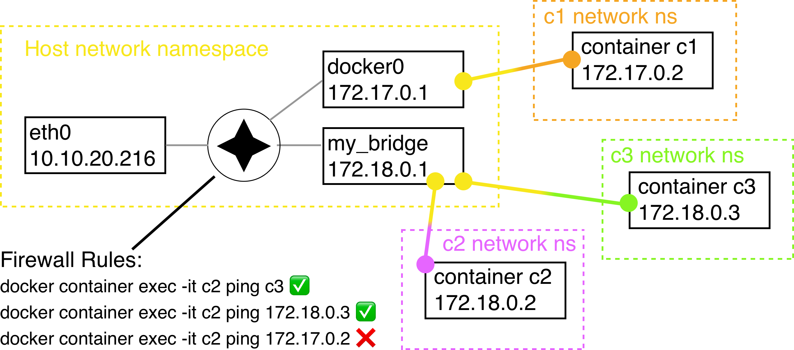Exposing Container Ports
- Containers have no public IP address by default.
- Can forward host port -> container port
- Mapping created manually or automatically.
- Port mappings visible via
docker container lsordocker container port
 Instructor Demo: Single Host Networks
Instructor Demo: Single Host Networks
See the demo
- Single Host Networks
In the Exercises book.
Exercise: Single Host Networks
Work through
- Introduction to Container Networking
- Container Port Mapping
in the Exercises book.
Docker Networking Takeaways
-
Single host networks follow the container networking model:
- Sandbox: Network namespaces
- Endpoint: veth (linux)
- Network: bridge (linux)
- Containers resolve each other by DNS lookup when explicitly named and attached to custom networks
- Docker software defined networks are firewalled from each other by default
Further Reading
- Docker Reference Architecture: Designing Scalable, Portable Docker Container Networks: https://dockr.ly/2q3O8jq
- Network containers: http://dockr.ly/2x1BYgW
- Docker container networking: http://dockr.ly/1QnT6y8
- Understand container communication: http://dockr.ly/2iSrHO0
Introduction to Docker Compose
Discussion: Processes vs. Applications
Containers and images describe individual processes. What will we need to describe entire applications?
Learning Objectives
By the end of this module, learners will be able to
- Design scalable Docker services
- Leverage Docker's built in service discovery mechanism
- Write a compose file describing an application
Distributed Application Architecture
- Applications consisting of one or more containers across one or more nodes
- Docker Compose facilitates multi-container design on a single node
Docker Services
- Goal: declare and (re)configure many similar containers all at once
- Goal: scale apps by adding containers seamlessly
- A service defines the desired state of a group of identically configured containers
- Docker provides transparent service discovery for Services
Service Discovery
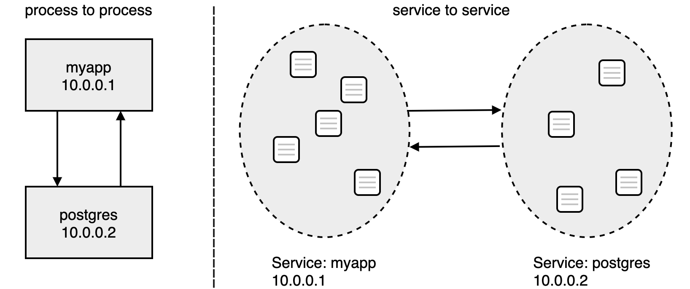Services are assigned a Virtual IP which spreads traffic out across the underlying containers automatically.
Our Application: Dockercoins

- It is a DockerCoin miner! 💰🐳📦🚢
- Dockercoins consists of 5 services working together:
 Instructor Demo: Docker Compose
Instructor Demo: Docker Compose
See the demo
- Docker Compose
In the Exercises book.
Exercise: Compose Apps
Work through
- Starting a Compose App
- Scaling a Compose App
in the Exercises book.
Docker Compose Takeaways
- Docker Compose makes single node orchestration easy
- Compose services makes scaling applications easy
- Bottleneck identification important
- Syntactically:
docker-compose.yml+ API
Further Reading
- Docker compose examples: http://dockr.ly/1FL2VQ6
- Overview of docker-compose CLI: http://dockr.ly/2wtQlZT
docker-compose.yamlreference: http://dockr.ly/2iHUpeX- Docker Compose and Windows: http://bit.ly/2watrqk
Wrap Up Docker-Compose - Sonarqube
Sonarqube
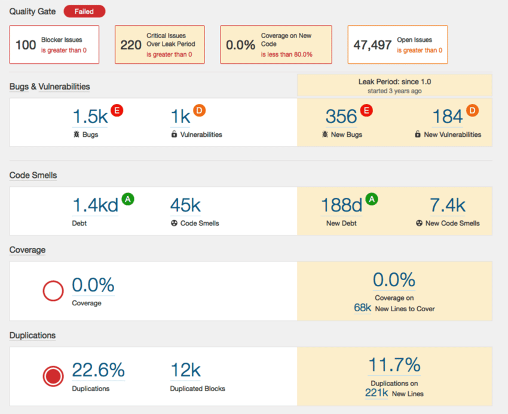Exercise Instructions
- Setup a Sonarqube server that listens on port 9000
- Connect it to a persistent database
i.e. if you ‚docker rm –f‘ your Sonarqube container and run a new one, no data is lost - Use postgresql and persist it‘s data on the host filesystem using volumes
- Verify e.g. by creating a user via Sonarqube UI, remove the container and run a new one – is the user still present?
- Check that Sonarqube is really using your postgresql database
- Hint: use docker-compose